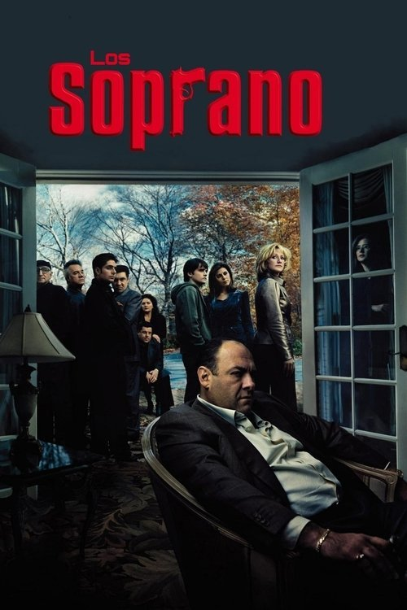

Los Soprano (1999)
Sinopsis Rápida
Tony Soprano, un capo mafioso de Nueva Jersey, comienza terapia para lidiar con ataques de pánico. Pero, ¿puede la terapia controlar los demonios de un hombre que controla la muerte?
Sinopsis Detallada
Los Soprano nos sumerge en el mundo subterráneo del crimen organizado a través de los ojos de Tony Soprano, un jefe de la mafia que lucha con la presión de su vida familiar y su violenta carrera criminal. La serie explora brillantemente la psicología compleja de Tony, sus relaciones disfuncionales y las consecuencias de sus decisiones en su entorno. Con una narrativa innovadora y personajes icónicos, la serie presenta una exploración cruda y realista de la familia, la lealtad y la moral ambigua. El retrato de Carmela, su esposa, y Christopher Moltisanti, su sobrino, amplían la perspectiva, mostrando las diferentes caras de un mundo gobernado por la violencia y el poder.
¿Por qué tenés que verla?
- Una exploración inigualable de la psique de un antihéroe.
- La actuación magistral de James Gandolfini como Tony Soprano es inolvidable.
- Revolucionó la televisión por su narrativa compleja y sus personajes realistas.
- Una crítica social incisiva sobre la familia, el poder y la identidad.
Idea Extra
Análisis de la influencia de Los Soprano en la televisión moderna y su legado cultural.